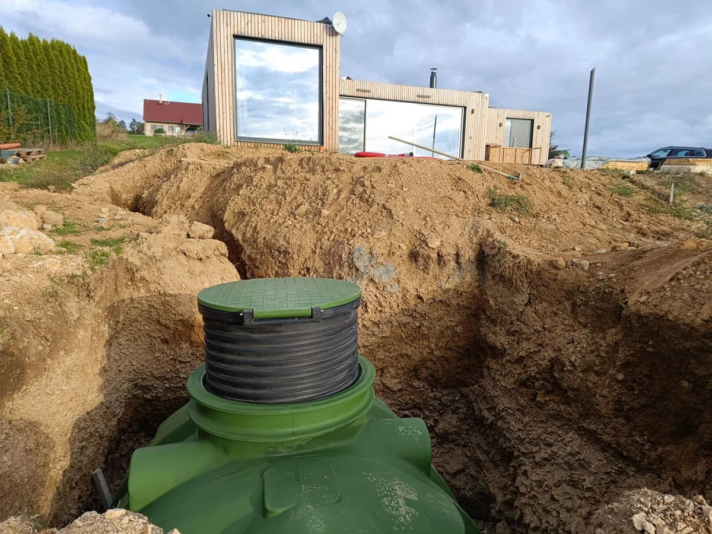

Megvalósított projektjeinkbőlMělník / EsővízA teljes projekt megtekintése01 / Esővíz
Az eső nem ér véget.
Kezdődik a hasznosítása.
A tetőről érkező víz tovább is hasznos lehet. Háza és telke adottságai szerint megtervezzük a tartályt és a rendszert a kerthez, valamint a megfelelő háztartási felhasználáshoz.
- 01Felfogni
A tetőről érkező víz elvezetése és szűrése.
- 02Tárolni
A telek adottságai szerint kiválasztott tartály.
- 03Újrahasznosítani
Szivattyúzás és vezetékek a tervezett felhasználáshoz.